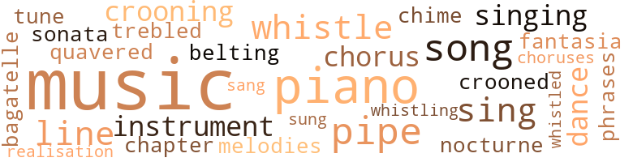
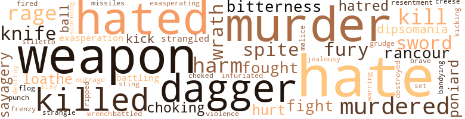

Murder Link (The), by Johnson, Henry T. (1866)
71 music-related terms matched in this text.
Most frequent terms in this topic: music (18); piano (7); song (4); pipe (4); sing (3)
bagatelle.n.01
Definition: a light piece of music for piano
| word | sentence |
|---|---|
| bagatelle | " A mere bagatelle , my dear . |
belt_out.v.01
Definition: sing loudly and forcefully
| word | sentence |
|---|---|
| belting | Outside the building , trim gardens and grass plots , wherein God 's plants and flowers flourished and blossomed to cheer His smitten creatures made in His image ; beyond - the belting wall with spikes . |
chapter.n.01
Definition: a subdivision of a written work; usually numbered and titled
| word | sentence |
|---|---|
| chapter | She was dead , and death had come to her with tenfold terror ; to the last ghastly chapter of her life the ghastlier finis had been inscribed in flame . |
chime.n.01
Definition: a percussion instrument consisting of a set of tuned bells that are struck with a hammer; used as an orchestral instrument
| word | sentence |
|---|---|
| chime | And so they waited while the minute-hand crept slowly down , and at last the tiny chime rang out again , recording the half-hour . |
chorus.n.01
Definition: any utterance produced simultaneously by a group
| word | sentence |
|---|---|
| choruses | Realty , Austen Lisle , after sitting into the small hours , in the company of jovial graziers and yeomen fanners , to say nothing of mine host of the ' Come and Welcome , ' smoking much tobacco , drinking mayhap too much punch , joining in lusty choruses and ' thumping the dominoes ' till the feet and hearts of your boon companions were set a-dancing , you should of rights be seeking your belated rest with a racking brain , a heavy heart , and a conscience bowed down by remorse . |
| chorus | And out of the very gladness of his youthful heart and the exuberance of the joy of life at one-and-twenty , as he strode along beside the stream he was longing to be whipping once again , he broke into the chorus , and his voice - young , strong , and clear - rang clarion-like upon the spring morning air : ' " Twas the sound of his horn brought me from my bed , And the cry of his hounds that he ofttimes led , And his view hallo-oho - who - who - oop ! |
| chorus | He was accorded the time-honoured rustic greeting , that is to say each member of the company joining in the general chorus of " Good-mar ' n , zur ! " and forthwith emptying his mug , replaced it with an eloquent thump upon the ring-stained trestle table . |
croon.v.01
Definition: sing softly
| word | sentence |
|---|---|
| crooned | She crooned the last words , her hand , closing round the fingers , hooked on the key , and , still crooning , detached them from that grasp . |
| crooning | She crooned the last words , her hand , closing round the fingers , hooked on the key , and , still crooning , detached them from that grasp . |
| crooning | How could any man play any game , he kept on crooning , knowing that his house harboured a thief , that he had been sheltering an adder that had stung him ? |
dance.n.01
Definition: an artistic form of nonverbal communication
| word | sentence |
|---|---|
| dance | I 'll play you such a dance you 've never heard before . |
dance.v.03
Definition: skip, leap, or move up and down or sideways
| word | sentence |
|---|---|
| dance | yes ! " she gasped , hastily , " he must have a tune to dance to ; only - my music 's all in there ! |
fantasia.n.01
Definition: a musical composition of a free form usually incorporating several familiar themes
| word | sentence |
|---|---|
| fantasia | Oft - times while her fingers strayed along the keyboard , gaunt , sad-eyed women would gather noiselessly around , hushing incoherent babblings - and over many faces would steal a happier and a hopeful calm , wild eyes would quench their restless fires in tears , so that those whose province it was to keep watch and ward there fostered Pansy 's devotion to the piano , encouraging her to minister to those minds diseased with rhapsody , sonata , nocturne and fantasia , at her own sweet will . |
music.n.01
Definition: an artistic form of auditory communication incorporating instrumental or vocal tones in a structured and continuous manner
| word | sentence |
|---|---|
| music | One day , in the garden of the Palace of Despair , Pansy beheld , flitting from flower to flower like a butterfly from the outer , gladder world , an angel-child , some four summers old , with childhood 's sunshine in her hair and eyes , and childhood 's music in her laugh . |
| music | And when , through the open windows that were barred , across the garden beneath , and , beyond , across the other garden the molten gold and silver notes rippled through another window that was not barred , and it was said that it was the girl Pansy Armadale playing so marvellously , little Enid declared that that was her " flower lady , " and that she was sure that she was good and kind , and lovable as she was lovely , or else how could she play such music ? |
| music | No merry laugh , no rippling music broke the silence now . |
| music | The girl who had killed her child talked to Pansy , and to her only , of it - of its pretty ways , of the cling and touch of its tiny fingers at her breast , and the music of its cooing . |
| music | And Pansy , who loved the child devotedly , willingly , eagerly , kept long , loving vigil by her bedside , reading and chatting in her sweet , low voice to her , soothing her to sleep with music eloquent of the ripple of silvery cascades , tire song of birds at dawn and June breezes amid roses - so what wonder that after those days Enid came to love and cling to her Pansy more and more ? |
| music | go and play the music for him ! " |
| music | yes ! " she gasped , hastily , " he must have a tune to dance to ; only - my music 's all in there ! |
| music | She seemed quite delighted , and they 're so fond of her ; and then we made a most glorious discovery - we found that Miss Sylvester , that 's her name , was absolutely a genius with music * - plays exquisitely , with the most beautiful touch . " |
| music | " I say , do n't you think you could manage to coax Miss Sylvester back again to give us some music ? |
| music | The gentlemen are dying for some music . |
| music | There was a whispered colloquy respecting socks to be darned , music to be mended , accounts to be checked , letters to be written - Mrs. Wickham Manners 's contributions to the discussion mainly consisting of " Bother ! |
| music | " So delighted with your music , even from a distance ! |
| music | He led her to the piano , turned the leaves for her , sat , as it were , entranced , listening to the music her fingers wakened from the keys , only wanting , only wailing to be alone with her to whisper to her words of warning , words of hope , to tell her that he was on her side , believing in her - never , never more against her , her knight and champion even to the death . |
| music | Ere those puzzles had been solved the door opened , and she seemed rapt in the music she was playing . |
| music | I can sew and scrub , and I know French and German and something of music . " |
| music | The music , dying , merged into the humming of the bees , Job was back on earth again , bowed with the burden of his mortality . |
| music | Through the open windows floated on the summer sunshine madam 's voice within the cool and darkened room , and she was saying : " Child , make this your home ; stay and make me happy with your music . " |
| music | When he met her face to face , looked in those violet eyes , listened to the music of her velvet voice , all his being thrilled with a yearning to clasp the girl 's form close to his heart , to run kisses on those heavenly lips . |
musical_instrument.n.01
Definition: any of various devices or contrivances that can be used to produce musical tones or sounds
| word | sentence |
|---|---|
| instrument | hot the victim - that was the haunting , taunting , exasperation of it , the blame of it , the shame of it I For , if those conclusions or those premises , or any or all were faulty , false , or fraudulent , then he was the instrument of a terrible miscarriage of justice , and the victim was the girl in whose violet eyes he had read the light of truth and the protestations against the false . |
| instruments | : Elmer Dring ; and Esslin , harping on his remarked : " A man 's hobbies form the index to his The man we speak of in question collected lethal weapons - instruments of death . |
nocturne.n.01
Definition: a pensive lyrical piece of music (especially for the piano)
| word | sentence |
|---|---|
| nocturne | Oft - times while her fingers strayed along the keyboard , gaunt , sad-eyed women would gather noiselessly around , hushing incoherent babblings - and over many faces would steal a happier and a hopeful calm , wild eyes would quench their restless fires in tears , so that those whose province it was to keep watch and ward there fostered Pansy 's devotion to the piano , encouraging her to minister to those minds diseased with rhapsody , sonata , nocturne and fantasia , at her own sweet will . |
phrase.n.02
Definition: a short musical passage
| word | sentence |
|---|---|
| phrases | Look here , we 're in this swim together - we need n't measure phrases or mince matters . " |
piano.n.01
Definition: a keyboard instrument that is played by depressing keys that cause hammers to strike tuned strings and produce sounds
| word | sentence |
|---|---|
| piano | In the large kind of common room there was a piano , and it was Pansy 's wont to while away many hours in playing over the melodies that her dear Nannie had loved so fondly . |
| piano | Oft - times while her fingers strayed along the keyboard , gaunt , sad-eyed women would gather noiselessly around , hushing incoherent babblings - and over many faces would steal a happier and a hopeful calm , wild eyes would quench their restless fires in tears , so that those whose province it was to keep watch and ward there fostered Pansy 's devotion to the piano , encouraging her to minister to those minds diseased with rhapsody , sonata , nocturne and fantasia , at her own sweet will . |
| piano | As for the piano , it was closed , unattuned , like Nannie 's heart . |
| piano | From upstairs came melodious piano chords . |
| piano | He led her to the piano , turned the leaves for her , sat , as it were , entranced , listening to the music her fingers wakened from the keys , only wanting , only wailing to be alone with her to whisper to her words of warning , words of hope , to tell her that he was on her side , believing in her - never , never more against her , her knight and champion even to the death . |
| piano | Meantime Austen Lisle met the challenging , pleading , wistful gaze , and , leaning across the piano , he whispered : " Oh , it 's you ! |
| piano | Pansy , deeming it just as well not to correct the misunderstanding as to her name , and only too glad of any opportunity to express her gratitude , limped across to the piano . |
pipe.n.04
Definition: a tubular wind instrument
| word | sentence |
|---|---|
| pipe | After a little fuming she resumed her book and Wickham Manners his pipe . |
| pipe | " It 's certainly rather odd , " said Wickham Manners , knocking out the ashes of his pipe . |
| pipe | Here the fanner and the object of the indictment paused to refil and light his pipe . |
| pipe | " Just like ' im and just like ' er ! " meditated Job Wattles , seated on the handle of his wheelbarrow and puffing at his cutty pipe . |
realization.n.03
Definition: a musical composition that has been completed or enriched by someone other than the composer
| word | sentence |
|---|---|
| realisation | He little guessed what realisation of imagination the future held in its lap . |
sing.v.02
Definition: produce tones with the voice
| word | sentence |
|---|---|
| sing | Pansy , sing to us , play to us , stay with us . " |
| sing | I coaxed her there to see the lovely toys and pictures , and I said you 'd come and sing to her ; it was for me to bind , and for the fire to find ! " |
| sang | She thanked the kind , white moon for lighting her way ; she was so glad to breathe the sweet , fresh , summer night-air outside , and every minute farther from the hated walls of the Lone House , that at times she sang ! |
| sing | " Cruel sun to shine so , unfeeling birds to sing so , when I , who love you so dearly , am so sad ! " she murmured , piteously . |
| sung | He burned with just such a passion for her as that Bedouin whose love-song he had sung to her in the summer twilight . |
singing.n.01
Definition: the act of singing vocal music
| word | sentence |
|---|---|
| singing | here you are feeling as fit as a three-year-old , as chirpy as the dear little dicky birds who seem to be singing for your delectation , absolutely glorying in the dissipation that has kept you out of doors to watch the golden lances of the morning rout the dark hosts of night , the feathery green of the springtime boughs gleaming through the vanishing mists , and the dawnlight kissing the bosom of the sleeping stream to gold . |
| singing | And so one summer night when they had left off playing and singing , and he had taken leave of his hostess , he said , quietly , but with much meaning in his voice : " Pansy , " for almost from the first he had called her by that name , " walk with me to the wicket ; I want to speak to you ! " |
sonata.n.01
Definition: a musical composition of 3 or 4 movements of contrasting forms
| word | sentence |
|---|---|
| sonata | Oft - times while her fingers strayed along the keyboard , gaunt , sad-eyed women would gather noiselessly around , hushing incoherent babblings - and over many faces would steal a happier and a hopeful calm , wild eyes would quench their restless fires in tears , so that those whose province it was to keep watch and ward there fostered Pansy 's devotion to the piano , encouraging her to minister to those minds diseased with rhapsody , sonata , nocturne and fantasia , at her own sweet will . |
song.n.01
Definition: a short musical composition with words
| word | sentence |
|---|---|
| song | And Pansy , who loved the child devotedly , willingly , eagerly , kept long , loving vigil by her bedside , reading and chatting in her sweet , low voice to her , soothing her to sleep with music eloquent of the ripple of silvery cascades , tire song of birds at dawn and June breezes amid roses - so what wonder that after those days Enid came to love and cling to her Pansy more and more ? |
| song | In that moment , sire thought , not of the accusing advocate forging against her , link by link , the chain of damming , though mistaken evidence ; no , she was remembering that summer morning that seemed so Jong ago - so many things , and such things had transpired since then - such drama , such tragedy had been enacted ; was thinking of his glad song , his gay banter - then of his swift rush to her rescue , the contagious courage of his words . |
| song | Job Wattles , without , ceased for a moment straining at the huge roller and listened to what seemed to him all the throstles in all the world joining in one bewildering burst of harmony , and then to one inimitable solo by the rarest songster of them all , and , after that , he wondered - was he dreaming , or were white-robed angels floating in the rainbow light flooding through the stained windows of the old church aisle , calling him to lay down life 's bowed and stunted shell and join their song ? |
| song | But on this momentous summer day all the interest of all the city was withdrawn awhile from the festival of song that formed one facet of the city 's fame , from the Yeomanry inspection and ball , even from the Flower Show , and centred in the old Shire Hall , wherein the County Assizes were being held - and a vaster crowd surged round the doors of the public entrance than had last night been gathered at those of the Theatre Royal , albeit a London constellation were shining there . |
treble.v.01
Definition: sing treble
| word | sentence |
|---|---|
| trebled | Darrell had offered a price for it ; a big price , which , it being refused , he had doubled - had trebled when Elmer had sworn that Pansy was alive - that , he was on his way to meet her . |
tune.n.01
Definition: a succession of notes forming a distinctive sequence
| word | sentence |
|---|---|
| melodies | In the large kind of common room there was a piano , and it was Pansy 's wont to while away many hours in playing over the melodies that her dear Nannie had loved so fondly . |
| line | Depositions , shorthand notes , instructions , he reread them all , line for line , word for word , he had them by heart . |
| line | Depositions , shorthand notes , instructions , he reread them all , line for line , word for word , he had them by heart . |
| tune | yes ! " she gasped , hastily , " he must have a tune to dance to ; only - my music 's all in there ! |
| line | In the dark one blundered across a line of same and plunged into that stagnant fountain basin ; whereupon his language also would not admit of publication . |
warble.v.01
Definition: sing or play with trills, alternating with the half note above or below
| word | sentence |
|---|---|
| quavered | Job Wattles , trembling like a leaf , quavered : " Oh , marm ! |
whistle.v.01
Definition: make whistling sounds
| word | sentence |
|---|---|
| whistle | He suppressed a whistle . |
| whistle | Back from afar came through the night the long scream of a railway locomotive 's whistle . |
| whistling | Nearer , louder came that whistling scream and white lights yonder through the dark . |
| whistled | Harvey Darrell whistled softly and made notes - and went on rummaging . |
| whistle | A moment she struggled and writhed ; then , raising the other hand , slashed him across the face with the dog-whip she carried , and swiftly placing the handle to her lips , blew the whistle . |
149 violence-related terms matched in this text.
Most frequent terms in this topic: hate (15); hated (9); murder (9); dagger (8); weapon (8)
abhor.v.01
Definition: find repugnant
| word | sentence |
|---|---|
| loathe | I hate him , loathe him , but he shall play my game - he shall win me my revenge - and she shall lose her fortune and her liberty ! " |
| loathe | " Brute of a dog ! " he mumbled ; " I loathe dogs - they 're always so beastly suspicious of me . |
aggravation.n.01
Definition: an exasperated feeling of annoyance
| word | sentence |
|---|---|
| exasperation | hot the victim - that was the haunting , taunting , exasperation of it , the blame of it , the shame of it I For , if those conclusions or those premises , or any or all were faulty , false , or fraudulent , then he was the instrument of a terrible miscarriage of justice , and the victim was the girl in whose violet eyes he had read the light of truth and the protestations against the false . |
bandy.v.02
Definition: exchange blows
| word | sentence |
|---|---|
| bandying | A pleasanter dinner-table one could hardly imagine ; the fare was good , the wine was good , the company was good , the wit as dry as the wine , and when the ladies had risen and the blue , fragrant mists began to wreathe from rare Havannas , and the decanters , glowing like mammoth rubies of wondrous fire , circled , and the comfortable , cheerful circle drew closer round the dessert-laden mahogany , cracking jokes with walnuts and bandying anecdotes , taken , like the nuts , with just a grain of salt , on each of the clean-cut , clever faces , there sat an expression which might have been interpreted , " Ye gods ! |
battle.v.01
Definition: battle or contend against in or as if in a battle
| word | sentence |
|---|---|
| battling | The Terror in the throes of a paroxysm ceased her shrieks , her curses , her battling , and at the sound of Pansy 's voice , and the touch of her cool little hands suddenly burst into a flood of weeping that eased her heart , and , freed of the seven devils that had possessed her , knelt at the girl 's feet as at a guardian angel 's . |
| battled | So the lawyer and the doctor battled with each other , neither seeming in a hurry to leave , though each kept on remarking that the hour was growing late , and each beneath his breath was muttering , " Will he never go ! " |
contemn.v.01
Definition: look down on with disdain
| word | sentence |
|---|---|
| scorning | The onus probandi lay upon the trespasser , not but what Darrell 's title was unassailable , open to all the world to challenge ; and when the newcomer , scorning other aid , appeared in person , and in this strain defied all others , particularly Elmer Dring , Dasborough held its breath , astounded . |
craze.n.02
Definition: state of violent mental agitation
| word | sentence |
|---|---|
| frenzy | " Give me the key - the key ! " shrieked Pansy , in a frenzy . |
dagger.n.01
Definition: a short knife with a pointed blade used for piercing or stabbing
| word | sentence |
|---|---|
| dagger | Where have you hidden the snake-shaped dagger with the hilt of gold ? |
| dagger | That missing dagger , with its snake-like hilt , hanging there on the wall Elmer tried in vain to keep his eyes away from , the old man 's asseveration that Pansy had stolen it - all these details he encouraged Esslin to dwell upon , loosening the doctor ' s tongue to further garrulity by means of the whisky bottle . |
| dagger | " Sorneone came very quietly behind him with a handled dagger . " |
| dagger | He meant with the snake-handled dagger to end his work . |
| dagger | " But amongst the captain 's curios there was a case of weapons he 'd picked up in different quarters of the world ; such rubbish did n't appeal to me , except one little dagger thing , the hilt shaped like a coiled and twisted scaly snake , the turned-back mouth making all of guard , and for a fang it 's got a blade of blue steel . " |
| dagger | These and others - but the old man , with a hoarse , guttural cry , exclaimed : " The snake dagger ! |
| dagger | I should n't wonder if the Court has something to say to this Mr. Dring for not mentioning at the inquest the little incident of the missing dagger . |
| dagger | I wonder where that wretched dagger went to ; that was the tool that did the work ; whosoever 's the hand - and the hand that plied it secreted it - I wonder where ? " |
destroy.v.04
Definition: put (an animal) to death
| word | sentence |
|---|---|
| destroy | To save her or destroy her ? |
| destroyed | Do you think I should n't have destroyed it if it had been of any use to anyone - but with Pansy dead , leaving no relatives , it 's nan and void . " |
dipsomania.n.01
Definition: an intense persistent desire to drink alcoholic beverages to excess
| word | sentence |
|---|---|
| dipsomania | I 've lost my most lucrative patient through telling his wife I saw dipsomania in his eye ; she wanted to pretend he was a pillar of total abstinence . |
| dipsomania | And while they rearranged the pieces , Judex Esslin , who detected kleptomania in a child 's grab at its father 's watch-chain and incipient dipsomania in a thirsty porter 's request for a pint of beer , was warming thoroughly to his arguments , when Gideon Abbs , who regarded them with the contempt born of , familiarity , snarled : " Stuff and nonsense ! |
fight.n.05
Definition: a boxing or wrestling match
| word | sentence |
|---|---|
| fight | What a fight he would have made ! |
fight.v.02
Definition: fight against or resist strongly
| word | sentence |
|---|---|
| fought | The others told me , when it was all over , that you fought the case with only half your energy - that you scarcely seemed yourself . " |
| fight | I know too much ; they fight shy of a man who finds them subject to worse things than they call him in for . |
| fought | They fought and struggled long and desperately there in the narrow path beside the hedge , and along the bank that ran down to the line . |
flog.v.01
Definition: beat severely with a whip or rod
| word | sentence |
|---|---|
| flog | " No , I 'd flog you , " replied the other , lighting a cigar , And the new arrival at the Lone House was certainly on the right way to bringing things to light . |
fury.n.01
Definition: a feeling of intense anger
| word | sentence |
|---|---|
| rage | Then Elmer 's rage broke bounds . |
| fury | He instanced her fury at the narrow escape of Pansy Armadale from the law 's ultimate penalty and her unconcealed exultation at the dread fate reported to have overtaken her . |
| Rage | Rage and frantic terror filled once again his being . |
| rage | Her face was whiter than ever with rage at the reflection that all her efforts to get level with her new master had been futile , that she had been tricked into perjury by him , into swearing hard and fast at Pansy 's trial to the lies he had so cunningly sketched out . |
| fury | For a while he stood there inarticulate - beside himself in a paroxysm of baffled fury . |
| rage | , The deep-sunken eyes sparkled , the veins stood out in the bald and shiny cranium , every fibre of the old man 's being twitched with the intensity of greed and rage , and he went off into a fit of coughing that left him panting - almost collapsing - in the high arm-chair beside the table . |
| fury | For now it was not like the the same man 's face ; his lips were set hard in a sinister snarl , his brows met in a menacing frown , his eyes glittered with a cold and cruel light , his nostrils were dilated , and his breast heaved with the gasps that told of a hell of fury seething , bubbling in the cauldron of his heart . |
gag.v.06
Definition: cause to retch or choke
| word | sentence |
|---|---|
| choking | Surely enough , along the wards and corridors came rolling huge , billowy clouds of choking smoke , a blast of heat , the sound of crackling , and tongues of lurid flame driving all living things before it , save such as it smote down ! |
| choking | " You would n't be such a - I mean , " he said , choking back his wrath and impatience , " you would not be so cruel , surely . |
| choked | The old windows , opaque with grime and long past cleaning , had been bodily removed , and in their places bright clean ones beamed , smiled from ear to ear , or rather , curtain to curtain - ruthless war had been made upon the weeds that choked even the stone doorsteps . |
grudge.n.01
Definition: a resentment strong enough to justify retaliation
| word | sentence |
|---|---|
| grudge | and would be more powerless than ever to repay the grudge she nursed against man , who , having used her and her malice to his ends was flinging her aside anxious to be rid of her . |
harm.v.01
Definition: cause or do harm to
| word | sentence |
|---|---|
| harm | You 'll let me go my way - you wo n't harm me any more ? " |
| harm | What I ask wo n't harm you - it wo n't be a farthing out of his pocket ; you 're not robbing him - you 're only keeping him from being spiteful , from crushing me . . . . " You wo n't ! |
hate.n.01
Definition: the emotion of intense dislike; a feeling of dislike so strong that it demands action
| word | sentence |
|---|---|
| hatred | And , deadly as was Jane 's hatred for her new master , for once she welcomed his appearance , when hastening to the door he seized the brass-studded collar circling the big brute 's massive neck , exclaiming : " Hallo , there ! |
| hate | " It means , " said Austen Lisle , who had arrived along with him , " that revenge and hate have overtaken him ahead of Justice . |
| hatred | I see , Pansy inherited your hatred . |
| hate | " Feared you , I suppose ; a girl with eyes like that does n't know what hate is - not but what I 'll swear she had cause to . |
| hate | " Possibly her remains , if - as you aptly intimated - Gideon Abbs had let you wreak your hate , Jane Collins / ' " But I tell you she went right enough ! " cried the woman , goaded to wrath because this man , like all the rest , was crazy where that girl was in question , though he had only seen her picture . |
| hate | Not particularly original - as old as the hills , as love and hate , as the branding of Cain , the exacting of an eye for an eye , and blood for blood . |
hate.v.01
Definition: dislike intensely; feel antipathy or aversion towards
| word | sentence |
|---|---|
| hated | there was no lack of company - young and old , cultured , uncultured , brutal , refined ; some who had killed because they hated , others because they loved - so complex are the ills that flesh is heir have saved her from what was infinitely worse . |
| hate | How I hate you ! |
| hate | do please let me go away from here ; you hate me so - why do you keep me prisoned here ? " |
| hate | Well , then , I will do what I have implored you to let me do day by day and year by year ; I will go away from ; this place I hate , and where I am hated , and by work win the bread of independence ! |
| hate | " They both hate you , " he added , vehemently . |
| hated | Not altogether that he hated her less , but that he hated the crawling liars around him more , and because of the disappointment it would be to Judex Esslin , Elmer Bring , and Jane Collins . |
| hated | Not altogether that he hated her less , but that he hated the crawling liars around him more , and because of the disappointment it would be to Judex Esslin , Elmer Bring , and Jane Collins . |
| hated | You know you were always sweet on her , for all the difference in your ages ; that 's why I always hated her worst of all . |
| hated | " Hallo , there ! " she heard the hated voice of the man ceasing to be her master . |
| hate | I know you hate this hound . |
| hate | " Not I - I hate the beast as I hate the devil - and some other people . |
| hate | " Not I - I hate the beast as I hate the devil - and some other people . |
| hate | I hate him , loathe him , but he shall play my game - he shall win me my revenge - and she shall lose her fortune and her liberty ! " |
| hated | As for friends , Gideon left none - those who had known him best had hated him worst . |
| hate | You 've bargained with the man we hate ? " |
| hated | She thanked the kind , white moon for lighting her way ; she was so glad to breathe the sweet , fresh , summer night-air outside , and every minute farther from the hated walls of the Lone House , that at times she sang ! |
| hated | " I hated her , " said Jane ; " I wish , for all they said , I 'd spoken out . |
| hated | She hated me too much to tell me . " |
| hate | I think I hate you worse than her - you know so much ! " |
| hate | " Until just now I loved you - now I love and hate you . |
indignation.n.01
Definition: a feeling of righteous anger
| word | sentence |
|---|---|
| outrage | I can not - I will not stay here to endure the outrage of your false and cruel accusation ! " |
infuriate.v.01
Definition: make furious
| word | sentence |
|---|---|
| exasperating | Nor were those entrusted with the care of the distraught creatures unmindful of these things , and they began to exchange opinions that circumstances and conditions must have been especially exceptional tor this dove of a girl to have played the pantheress ; that the old curmudgeon must have broken all records in goading and exasperating . |
| infuriated | And with one arm he thrust back the infuriated old curmudgeon ; with the other he urged the girl out of the room . |
injury.n.01
Definition: any physical damage to the body caused by violence or accident or fracture etc.
| word | sentence |
|---|---|
| harm | Nothing of any harm . |
| harm | You do n't know what harm I can do her . |
jealousy.n.01
Definition: a feeling of jealous envy (especially of a rival)
| word | sentence |
|---|---|
| jealousy | Except that Ann Emden , giving vent to jealousy and spleen , screamed at her : " This is your work , you little hussy ; you 've shown your claws at last ; but I 'll be even with you ! " |
kick_back.v.02
Definition: spring back, as from a forceful thrust
| word | sentence |
|---|---|
| kicking | " It 's like his insolence to keep me kicking my heels here like a lackey ! " he muttered . |
| kick | One old fool said he 'd kick me out of the house , because I told his attendant to watch him for suicidal monomania . " |
| kick | " It is sometimes less expensive to be robbed than to kick against , you know , " said Darrell , handing Jane Collins the doctor 's bill , with cheque in full annexed , and instructions to bring back a receipt . |
kill.v.10
Definition: cause the death of, without intention
| word | sentence |
|---|---|
| killed | there was no lack of company - young and old , cultured , uncultured , brutal , refined ; some who had killed because they hated , others because they loved - so complex are the ills that flesh is heir have saved her from what was infinitely worse . |
| killed | The girl who had killed her child talked to Pansy , and to her only , of it - of its pretty ways , of the cling and touch of its tiny fingers at her breast , and the music of its cooing . |
| kill | you jade - I 'll kill you ! " yelled the Saint . |
| kill | If looks could kill , if eyes could wither , it would have fared ill with Harvey Darrell , as she , after a silent pause , breathing heavily , sidled from the room . |
| killed | And when that blow fell on me they thought that it had killed me ! " |
| kill | Do n't kill me ! |
| killed | It was I - not Pansy Armadale - killed Gideon Abbs - with that very poniard . |
| killed | It was only his body that was killed - you would slay my soul ! |
| kill | As to the presence of mammalian blood , it was a weapon constructed to kill or wound ; might it not have been put to the use for which it was intended even before Gideon Abbs acquired it ? |
knife.n.02
Definition: a weapon with a handle and blade with a sharp point
| word | sentence |
|---|---|
| knife | Then his eyes dilated , he dropped his knife and fork , took up the paper , seized with a strange emotion , whose existence in his being he himself had scarce suspected . |
| knife | " It 's war - war to the knife between me and that quarter . |
| knife | Rising and stooping over that article of furniture , and , opening a knife keen as a razor , he sliced and slashed its cushion and its padding , ripped out the horsehair and the wadding , groping with both hands all over it . |
kris.n.01
Definition: a Malayan dagger with a wavy blade
| word | sentence |
|---|---|
| creese | An Italian stiletto , a Spanish poniard , a backwoodsman 's bowie-knife , a Malay creese , a strangely-fashioned weapon worn by a Creole to secure her blue-black tresses - and defend her honour . |
malice.n.01
Definition: feeling a need to see others suffer
| word | sentence |
|---|---|
| spite | Hurriedly , as well as might be , they took a muster-roll , and in spite of all that had been and still was being done , found gaps here and there . |
| spite | It was only Pansy , recovering from her semiswoon who could tell them where , could show them where ; and , forgetting all , save that she was a fellow-creature , afflicted and in peril , Pansy made her way back , in spite of the protestations and evading the efforts to persuade her ; back to the corridors above , back through the smoke gloom , in quest of the woman who , in her blindness , had threatened her with death . |
| malice | and would be more powerless than ever to repay the grudge she nursed against man , who , having used her and her malice to his ends was flinging her aside anxious to be rid of her . |
| spite | Not so by Bingo , the brindled bull , who , swirling quickly round and catching a glimpse of the flabby face , that in an instant disappeared , stampeded madly towards the wicket , over lawn , flower-beds and all , and , in spite of the remonstrances of his two divinities , dashed across and flung himself against the wicket , baying , yelping , snorting , snarling furiously , clamouring as plainly as canine expression would permit , " Let me get at him - let me tear him limb from limb ! " |
murder.n.01
Definition: unlawful premeditated killing of a human being by a human being
| word | sentence |
|---|---|
| murder | " We find , " said the foreman of the jury , " the prisoner guilty of the murder of Gideon Abbs ; but that she was not at the time responsible for her actions . " |
| murder | some persons - directly or indirectly concerned in the murder , had planned to throw suspicion upon her ; unless , indeed , there had been a foul conspiracy to add by perjury murder to murder . |
| murder | some persons - directly or indirectly concerned in the murder , had planned to throw suspicion upon her ; unless , indeed , there had been a foul conspiracy to add by perjury murder to murder . |
| murder | some persons - directly or indirectly concerned in the murder , had planned to throw suspicion upon her ; unless , indeed , there had been a foul conspiracy to add by perjury murder to murder . |
| murders | There are the murders , the horrible accidents , my genial Jane , the breaches of our glorious laws - some of the breaches . " |
| murder | - for the murder ! |
| murder | She knows that ! " and he pointed to the woman he had tried to murder . |
| murder | And long after he had perused and put aside the rest he sat turning over slowly again and again the sheets of this brief for the Crown on the prosecution of one Pansy Armadale , who had been committed for trial at the Dunchester Assizes for the murder of one Gideon Abbs , late of Dassborough . |
| murder | And the great ladies of the country-side had clamoured and schemed for reserved seats on the bench far more vehemently than for stalls and boxes at the opposition show , where they were anathematising the bad luck of their morning 's performance clashing with the sensational murder trial . |
| murder | Upon the girl 's neck fell a mass of wavy , light brown hair , and the long-lashed , dark-ringed eyes was identified as the one bought by Gideon Abbs at the sale of Captain Burbidge 's effects - as the one he , on the night of the murder , accused the prisoner of stealing . |
murder.v.01
Definition: kill intentionally and with premeditation
| word | sentence |
|---|---|
| murdered | What were the antecedents of this Harvey Darrell , this second cousin of the murdered man ? |
| murdered | He was engaged at the time with one of my managing men in investigating the matter of one Abbs - Gideon Abbs , you know , the man who was murdered at Dassborough . |
| murdered | " We find , " the foreman of the jury deliberately answered , " that the old chap - beg pardon - the deceased , was wilfully murdered on the night in question by some person or persons unknown - and that is the verdict of us all . " |
| slay | It was only his body that was killed - you would slay my soul ! |
| murdered | Harvey Darrell , smartly groomed , imperturbable , was there in the Court well , unconcernedly flicking the dust from his immaculate patent leather shoes - and no little interest was shown in the smart young heir of the murdered miser . |
| murdered | True it had been proved that the murdered man had treated her with harshness , that his whole being was absorbed in an avarice that made him suspect humanity at large of rank dishonesty . |
musket_ball.n.01
Definition: a solid projectile that is shot by a musket
| word | sentence |
|---|---|
| ball | " I thought it just possible he might have gone to the mayoress ' fancy dress ball or up , to London for a ramble round the West-end , he 's such a gay dog . " |
| ball | But on this momentous summer day all the interest of all the city was withdrawn awhile from the festival of song that formed one facet of the city 's fame , from the Yeomanry inspection and ball , even from the Flower Show , and centred in the old Shire Hall , wherein the County Assizes were being held - and a vaster crowd surged round the doors of the public entrance than had last night been gathered at those of the Theatre Royal , albeit a London constellation were shining there . |
open_fire.v.01
Definition: start firing a weapon
| word | sentence |
|---|---|
| fired | Needless to say these fired not only the imagination but cupidity of some . |
pain.v.02
Definition: cause emotional anguish or make miserable
| word | sentence |
|---|---|
| hurt | He once said Pansy was the only honest soul about him , and that he used to call her thief because he knew it hurt her so ; that was his mania - hurting people . " |
| hurt | " Oh , they would n't hurt me , surely ; and I 've nothing they could steal . " |
poniard.n.01
Definition: a dagger with a slender blade
| word | sentence |
|---|---|
| poniard | " And do you think he believed she had stolen that poniard ? " |
| poniard | An Italian stiletto , a Spanish poniard , a backwoodsman 's bowie-knife , a Malay creese , a strangely-fashioned weapon worn by a Creole to secure her blue-black tresses - and defend her honour . |
projectile.n.01
Definition: a weapon that is forcibly thrown or projected at a targets but is not self-propelled
| word | sentence |
|---|---|
| missiles | He flung the words at her as though they had been missiles , and she indeed flinched and writhed with anguish as though each of them had struck her physically . |
punch.n.01
Definition: (boxing) a blow with the fist
| word | sentence |
|---|---|
| punch | Realty , Austen Lisle , after sitting into the small hours , in the company of jovial graziers and yeomen fanners , to say nothing of mine host of the ' Come and Welcome , ' smoking much tobacco , drinking mayhap too much punch , joining in lusty choruses and ' thumping the dominoes ' till the feet and hearts of your boon companions were set a-dancing , you should of rights be seeking your belated rest with a racking brain , a heavy heart , and a conscience bowed down by remorse . |
resentment.n.01
Definition: a feeling of deep and bitter anger and ill-will
| word | sentence |
|---|---|
| bitterness | And Pansy 's cup of bitterness again overflowed . |
| rancour | Elmer Dring , Esslin , and Darrell only cherished rancour against her because they had desired her in vain . |
| bitterness | Even your bitterness towards me , for Heaven only knows what cause , has been assuaged by now . |
| resentment | So far from this news awakening any spirit of resentment or repulsion , all that happened was that their sympathy for Pansy intensified , and their belief in her innocence was strengthened . |
| rancour | And she , trembling in heart and in every limb , quailed before the vehement rancour of his regard , even as a timorous dove in the thrall of the rattlesnake 's doom-glittering eyes . |
rip.v.04
Definition: criticize or abuse strongly and violently
| word | sentence |
|---|---|
| ripped | Rising and stooping over that article of furniture , and , opening a knife keen as a razor , he sliced and slashed its cushion and its padding , ripped out the horsehair and the wadding , groping with both hands all over it . |
savageness.n.01
Definition: the property of being untamed and ferocious
| word | sentence |
|---|---|
| savagery | The savagery dominant in him had silenced that heart-string when she had said him no , but now that he read the news that she had ceased to be , that that sweet image was no more , that that tender flower of girlhood had been cut down in her bloom - it was the savagery in him that was stilled , and the one tender chord that wakened in his heart . |
| savagery | The savagery dominant in him had silenced that heart-string when she had said him no , but now that he read the news that she had ceased to be , that that sweet image was no more , that that tender flower of girlhood had been cut down in her bloom - it was the savagery in him that was stilled , and the one tender chord that wakened in his heart . |
sic.v.01
Definition: urge to attack someone
| word | sentence |
|---|---|
| set | And the company set off each in turn with some anecdote illustrating the little old maid 's goodness of heart and gentleness alike to human and to brute - a sick child saved by badly-needed nourishment , a struggling debtor set on his legs , an ailing woman nursed back to life , a despairing wrong-doer given pardon and another chance ; each and all had some such tale to tell of her . |
stiletto.n.01
Definition: a small dagger with a tapered blade
| word | sentence |
|---|---|
| stiletto | An Italian stiletto , a Spanish poniard , a backwoodsman 's bowie-knife , a Malay creese , a strangely-fashioned weapon worn by a Creole to secure her blue-black tresses - and defend her honour . |
sting.n.03
Definition: a painful wound caused by the thrust of an insect's stinger into skin
| word | sentence |
|---|---|
| sting | And she , at the touch , as at a reptile 's sting , drew back her hand , brushing with the other the place he had touched . |
strangle.v.01
Definition: kill by squeezing the throat of so as to cut off the air
| word | sentence |
|---|---|
| strangled | For instance every morning she exercised with , on her right , a young person who had strangled her child ( the father of that child , who had left both babe and mother to the desperation of despair , was meantime moving in the most select circles , untrammelled by any rules , unlimited by any spiked walls ) , and on her left a woman who had smashed her mistress 's head in with a hammer . |
| strangle | I 'd like to strangle that one . |
sword.n.01
Definition: a cutting or thrusting weapon that has a long metal blade and a hilt with a hand guard
| word | sentence |
|---|---|
| sword | " The law , " he said , " is the body , and justice is the soul ; justice is the cause , and the law is the sword that strikes for it - the buckler that defends it . |
| sword | If , perchance , at times the sword is slow to strike , and the shield fails to avert some swift thrust of evil , it is because the shield and sword are mortal , for law is human , made by humanity for humanity - but justice is divine . " |
| sword | If , perchance , at times the sword is slow to strike , and the shield fails to avert some swift thrust of evil , it is because the shield and sword are mortal , for law is human , made by humanity for humanity - but justice is divine . " |
violence.n.01
Definition: an act of aggression (as one against a person who resists)
| word | sentence |
|---|---|
| violence | For Jane Collins , whom Darrell first had approached , had - lest he should with his own hands with violence search her and tear from her the will - declared that Elmer held it . |
war.v.01
Definition: make or wage war
| word | sentence |
|---|---|
| warring | to exchange that painful interview with duty warring with compassion - to leave the heavy , somewhat sombre library for the light and daintiness of Cissie Wickham Manners ' drawing-room . |
weapon.n.01
Definition: any instrument or instrumentality used in fighting or hunting
| word | sentence |
|---|---|
| weapon | There it all was , piece fitting into piece ; the girl 's flight after the quarrel , after the accusation , after the threat - why , he himself might have borne witness to her irrational wandering in the small hours through the countryside , her remaining perdu all that while - then , most overwhelming , convincing of all , the discovery of the weapon with which the deed was done , buried in the garden-plot she tended . |
| weapon | " I buried the weapon in the garden at Homecroft . |
| weapon | " Yes , with just such a weapon as that he charged you with stealing - a weapon that was missing just before they missed you . |
| weapon | " Yes , with just such a weapon as that he charged you with stealing - a weapon that was missing just before they missed you . |
| weapons | " But amongst the captain 's curios there was a case of weapons he 'd picked up in different quarters of the world ; such rubbish did n't appeal to me , except one little dagger thing , the hilt shaped like a coiled and twisted scaly snake , the turned-back mouth making all of guard , and for a fang it 's got a blade of blue steel . " |
| weapons | : Elmer Dring ; and Esslin , harping on his remarked : " A man 's hobbies form the index to his The man we speak of in question collected lethal weapons - instruments of death . |
| weapons | His cunning little eyes peered inquiringly from under their bushy brows into those of the lawyer who , together with the doctor , forthwith a keen interest in the lethal lot he had that purchased at Burbidge 's auction ; and after a rising , he with some hesitation crossed the room disclosing a collection of murderous weapons had been worn in various waistbelts . |
| weapon | An Italian stiletto , a Spanish poniard , a backwoodsman 's bowie-knife , a Malay creese , a strangely-fashioned weapon worn by a Creole to secure her blue-black tresses - and defend her honour . |
| weapon | Of course the missing weapon was n't mentioned , or , rather , all mention of it w7as suppressed . |
| weapon | As to the presence of mammalian blood , it was a weapon constructed to kill or wound ; might it not have been put to the use for which it was intended even before Gideon Abbs acquired it ? |
| weapon | Was it not possible that the real murderer , anxious to avert suspicion from himself or herself , had planted that weapon where it was found to throw the sleuthhounds of justice off their scent ? |
weather.v.01
Definition: face and withstand with courage
| word | sentence |
|---|---|
| brave | Her heart still beating violently and her face still white , she said , in a trembling voice : " How brave and good of you - I might have been drowned ! " |
wrath.n.01
Definition: intense anger (usually on an epic scale)
| word | sentence |
|---|---|
| wrath | So she blundered on , fearing that each step would be her last ; that the smoke would smite her down for the fire to wreak its wrath on her . |
| wrath | " You would n't be such a - I mean , " he said , choking back his wrath and impatience , " you would not be so cruel , surely . |
| wrath | " Possibly her remains , if - as you aptly intimated - Gideon Abbs had let you wreak your hate , Jane Collins / ' " But I tell you she went right enough ! " cried the woman , goaded to wrath because this man , like all the rest , was crazy where that girl was in question , though he had only seen her picture . |
wrench.n.01
Definition: a sharp strain on muscles or ligaments
| word | sentence |
|---|---|
| wrench | Pansy leaned against that gate to wrench off the boot she could no longer bear , and because it all looked so cool , so sweet , and so happy ; and she was so done up , dusty , and weary , and in such soul - racking pain , she burst into a flood of tears . |
65 religion-related terms matched in this text.
Most frequent terms in this topic: devil (12); Saint (8); Heaven (6); church (5); Lucifer (5)
cathedral.n.02
Definition: the principal Christian church building of a bishop's diocese
| word | sentence |
|---|---|
| cathedral | And the grey old cathedral city , relic of mediæval England , was brightened up with floral waggonloads , carriages and cars bearing bevies of beauty , visitors in holiday attire , the High Sheriff in his magnificence , his trumpeters furnishing the crowning note of bravery , and the judges in scarlet and ermine come to determine grave issues and adjust the scales of liberty and durance - life and death . |
church.n.02
Definition: a place for public (especially Christian) worship
| word | sentence |
|---|---|
| church | I 'd - somehow , I 'd rather not go through it with you in a church ; I should be afraid of being struck by lightning . |
| church | " And not any one of 'em need have hindered our walking quietly into the registry for the matter of ten minutes ----- " " But you know what was always my idea , my dream , my chiefest ambition , Jane , dear - I wanted you to have a wedding , a real wedding with orange blossoms and a big cake and bridesmaids , a pair of greys dashing up to the church door , the organ playing the ' Rogues ' - I mean the ' Wedding March , ' and all the women envying you , Jane , and all the men envying me . " |
| church | Job Wattles , without , ceased for a moment straining at the huge roller and listened to what seemed to him all the throstles in all the world joining in one bewildering burst of harmony , and then to one inimitable solo by the rarest songster of them all , and , after that , he wondered - was he dreaming , or were white-robed angels floating in the rainbow light flooding through the stained windows of the old church aisle , calling him to lay down life 's bowed and stunted shell and join their song ? |
| church | " These here is quiet parts , with few folks about , and them mostly quiet ' uns , but whenever I drives you and Miss Pansy , whether to church on Sundays or into Conington on market-days , ai n't all the young fellows ' eyes a-following our chaise , and if some of the young chaps in church was to pay as much attention to the parson as they do to Miss Pansy 's pretty picture of a face it would be better for their peace of mind . " |
| church | " These here is quiet parts , with few folks about , and them mostly quiet ' uns , but whenever I drives you and Miss Pansy , whether to church on Sundays or into Conington on market-days , ai n't all the young fellows ' eyes a-following our chaise , and if some of the young chaps in church was to pay as much attention to the parson as they do to Miss Pansy 's pretty picture of a face it would be better for their peace of mind . " |
confession.n.05
Definition: the document that spells out the belief system of a given church (especially the Reformation churches of the 16th century)
| word | sentence |
|---|---|
| confession | The man holding his pulse with a doctor 's hand , with a magistrate 's wrote his confession down . |
curate.n.01
Definition: a person authorized to conduct religious worship
| word | sentence |
|---|---|
| parson | " These here is quiet parts , with few folks about , and them mostly quiet ' uns , but whenever I drives you and Miss Pansy , whether to church on Sundays or into Conington on market-days , ai n't all the young fellows ' eyes a-following our chaise , and if some of the young chaps in church was to pay as much attention to the parson as they do to Miss Pansy 's pretty picture of a face it would be better for their peace of mind . " |
deity.n.01
Definition: any supernatural being worshipped as controlling some part of the world or some aspect of life or who is the personification of a force
| word | sentence |
|---|---|
| divinities | Not so by Bingo , the brindled bull , who , swirling quickly round and catching a glimpse of the flabby face , that in an instant disappeared , stampeded madly towards the wicket , over lawn , flower-beds and all , and , in spite of the remonstrances of his two divinities , dashed across and flung himself against the wicket , baying , yelping , snorting , snarling furiously , clamouring as plainly as canine expression would permit , " Let me get at him - let me tear him limb from limb ! " |
doctrine.n.01
Definition: a belief (or system of beliefs) accepted as authoritative by some group or school
| word | sentence |
|---|---|
| doctrine | Not that it was looked upon in this instance as the doctrine of despair , because even Pansy 's counsel , recognising how securely the chains of circumstantial evidence were being forged in fetters for her , perceived in this hare-brained doctor 's theory a loophole in the event of all others being shut . |
eden.n.01
Definition: any place of complete bliss and delight and peace
| word | sentence |
|---|---|
| Heaven | Heaven knew no man amongst them more sincerely pitied and deplored than he the position of the unhappy girl on trial for her life before them , on trial for that life of which as yet she merely lingered on the threshold . |
| heaven | Harvey Darrell , riveting his gaze upon her from the well , thought how like a vision from heaven she seemed . |
| Heaven | " In Heaven 's name - is she safe ? " |
| Heaven | It was no spirit stood before him ; never was there ghost had dimples ; no wraith or ghost was ever garbed so daintily , neatly ; sweet vision , bright angel that she was , she belonged to earth - not yet to Heaven . |
| Heaven | Even your bitterness towards me , for Heaven only knows what cause , has been assuaged by now . |
| heaven | And her erstwhile custodian , the father of Enid , was moving heaven and earth to have justice done even to the memory of the girl who he believed had died after so nobly rescuing his child . |
| heaven | Cecilia Wickham Manners , with sweet , womanly soothing , calmed and comforted Pansy , while Jack and Austen Lisle moved heaven and earth , including the Bench and the Cabinet , to have justice rendered her . |
| Heaven | Then Austen Lisle took his bride away on a far honeymoon , over land and sea , and land again , that in bright and ever-changing scenes and climes , aided by his loving , sheltering care , she might , live down the ordeal of anguish , the dark , sad days for ever gone , and the dread chain that , link by link , was forged and interlinked - happily only to be , in Heaven 's good time , broken ----- " LINK BY LINK . " |
| Heaven | " Why , then , my dear , you sha 'n' t. Heaven knows I do n't want to lose you - I 've already been crying at the thought of it . |
god.n.03
Definition: a man of such superior qualities that he seems like a deity to other people
| word | sentence |
|---|---|
| God | Outside the building , trim gardens and grass plots , wherein God 's plants and flowers flourished and blossomed to cheer His smitten creatures made in His image ; beyond - the belting wall with spikes . |
| God | You do n't know how grateful I am to God . |
| God | " Then God help you ! " he whispered , bringing his clenched fist down upon the gate . |
prayer.n.01
Definition: the act of communicating with a deity (especially as a petition or in adoration or contrition or thanksgiving)
| word | sentence |
|---|---|
| prayer | She clutched an iron railing , and , summoning all her waning strength , dragged herself to a stairhead , then staggered down - down into lesser density , till at last she could breathe a prayer of thanks . |
religion.n.01
Definition: a strong belief in a supernatural power or powers that control human destiny
| word | sentence |
|---|---|
| faith | Furthermore , the dear old lady 's stout declaration of faith inspired the girl to a confidence she had not yet made , fearing lest because of her reticence , perhaps her disingenuousness , on that one point she would not be believed . |
sacrifice.v.04
Definition: make a sacrifice of; in religious rituals
| word | sentence |
|---|---|
| sacrificing | By giving the prisoner , so youthful , so desolate , so helpless , the benefit of the doubt , they would , at all events , spare themselves one harrowing and haunting reflection - that they had , without absolute irrefutable proof , run the risk , even the remote risk , of wrongly sacrificing a fellow-creature 's life - a life called into being by the Heavenly Father of them all . |
saint.n.02
Definition: person of exceptional holiness
| word | sentence |
|---|---|
| Saint | And there was one they called the Saint , a woman with soft , gentle eyes , soft and gentle of speech , with an oval face pale and serene , that might have looked down from some old master 's canvas , depicting seraphim - a woman with fair hair and small hands , ivory white - and her they watched particularly closely . |
| Saint | She watched the little vision of happiness out of sight ; saw her disappear within the enclosure of the medical superintendent 's house ; then , turning , encountered with a shudder the Tigress and the Saint , who , ranging themselves , walked on each side of her and thought aloud and incomprehensibly . |
| angel | The Terror in the throes of a paroxysm ceased her shrieks , her curses , her battling , and at the sound of Pansy 's voice , and the touch of her cool little hands suddenly burst into a flood of weeping that eased her heart , and , freed of the seven devils that had possessed her , knelt at the girl 's feet as at a guardian angel 's . |
| Saint | It was the Saint - transformed into a devil , shrieking in the fiendish hysteria of a Hecate . |
| Saint | And she flung herself upon the Saint to take , by force , the key that had been turned on Enid 's life . |
| Saint | But the Saint was strong with the strength of the seven devils within her ; and poor Pansy , panting , half-choked with the heat and fumes , reeled back before her blows . |
| Saint | Shrieking a torrent of imprecations , the Saint flew at her ; and Pansy , desperately screaming , " Enid , run for your life along there ! " dropped her and grappled with the woman . |
| Saint | you jade - I 'll kill you ! " yelled the Saint . |
| Saint | But where was the Saint ? |
| angel | And husband and wife entered upon a joint and general panegyric of the paragon young person , the veritable angel of the house , who had entered into their midst as it were from the clouds , for there was an undeniable vagueness about her antecedents ; who seemed endowed with the almost fairy gifts of patching up the children 's quarrels as neatly as the rents in their pinafores , frocks , and knickers , making their music-lessons their delight instead of their despair , controlling them with a sweet and gentle influence suggestive almost of a spell , a bright white-magic . |
| angel | It was no spirit stood before him ; never was there ghost had dimples ; no wraith or ghost was ever garbed so daintily , neatly ; sweet vision , bright angel that she was , she belonged to earth - not yet to Heaven . |
| angels | Job Wattles , without , ceased for a moment straining at the huge roller and listened to what seemed to him all the throstles in all the world joining in one bewildering burst of harmony , and then to one inimitable solo by the rarest songster of them all , and , after that , he wondered - was he dreaming , or were white-robed angels floating in the rainbow light flooding through the stained windows of the old church aisle , calling him to lay down life 's bowed and stunted shell and join their song ? |
satan.n.01
Definition: (Judeo-Christian and Islamic religions) chief spirit of evil and adversary of God; tempter of mankind; master of Hell
| word | sentence |
|---|---|
| devil | And , when alone with her , to whisper : " You little devil ! |
| devils | The Terror in the throes of a paroxysm ceased her shrieks , her curses , her battling , and at the sound of Pansy 's voice , and the touch of her cool little hands suddenly burst into a flood of weeping that eased her heart , and , freed of the seven devils that had possessed her , knelt at the girl 's feet as at a guardian angel 's . |
| devil | It was the Saint - transformed into a devil , shrieking in the fiendish hysteria of a Hecate . |
| Devil | At last the Devil 's come into his own ! " |
| devils | But the Saint was strong with the strength of the seven devils within her ; and poor Pansy , panting , half-choked with the heat and fumes , reeled back before her blows . |
| devil | Who could - and talking of the devil ----- " He turned from the window through which he was glancing as he spoke , and striding across to the door , shouted : " Show Doctor Esslin up at once . |
| devil | Who could - and talking of the devil ----- " He turned from the window through which he was glancing as he spoke , and striding across to the door , shouted : " Show Doctor Esslin up at once . |
| devil | " To the devil with your bluff I " Elmer Bring flared up . |
| devil | " To the devil with your foolery ! " shouted Elmer . |
| Lucifer | Lucifer , impetuous rascal ! |
| devil | He said he 'd be content to have given me five hundred , but now that I 've claimed a thousand I can go to the devil - do my best or my worst ; he 'll give me nothing . |
| Lucifer | She stole from the room , and crept softly up the first few stairs , scrambled up the rest , and scuttling into her room , locked herself in , for she heard Lucifer , the Great Dane , with a growl , scamper up from below - his keen , pricked ears catching the sound of even her stealthy footsteps . |
| devil | " Not I - I hate the beast as I hate the devil - and some other people . |
| devil | " Then I 'll speak - I 'll play the devil ! |
| devil | " But stay , Elmer , suppose I tell you to go to the devil with your will and your information - sooner or later you will in due course - but I am referring to the present matter . |
| devil | " What the devil 's that ? " faltered Elmer Dring , trembling fearfully in every limb . |
| Lucifer | And Harvey Darrell answered , between puffs of his cigarette : " It sounds like Lucifer . " |
| Lucifer | And Harvey Darrell , spurning aside the body of the man , knelt by that of the hound , and between his set teeth , whispered : " Yes , I 've lost Lucifer - and with Lucifer I know I 've lost my luck . " |
| Lucifer | And Harvey Darrell , spurning aside the body of the man , knelt by that of the hound , and between his set teeth , whispered : " Yes , I 've lost Lucifer - and with Lucifer I know I 've lost my luck . " |
| Devil | As if you did n't know ! " and he leered at her as the Devil might leer when complimenting one of his own on clever workmanship . |
| devil | And when outside the door she hissed beneath her breath : " Good-night , you devil ! |
satyr.n.02
Definition: one of a class of woodland deities; attendant on Bacchus; identified with Roman fauns
| word | sentence |
|---|---|
| satyr | For he had seized her wrist ; a satyr gleam in his eyes , a satyr grin wreathing his thick lips - her words had thrilled him with an exultant thought . |
| satyr | For he had seized her wrist ; a satyr gleam in his eyes , a satyr grin wreathing his thick lips - her words had thrilled him with an exultant thought . |
testament.n.01
Definition: a profession of belief
| word | sentence |
|---|---|
| Testament | And all at once I came on a document folded in four inscribed , ' Last Will and Testament of Gideon Abbs . ' |
| Testament | And then from amongst the wads tumbled a foolscap document , folded otherwise , and endorsed " Last Will and Testament of Gideon Abbs . " |
| Testament | Then from a cellaret that he religiously kept locked he drew a tantalus and syphon and mixed himself a drink , after which , re-settling himself in the easy-chair , he withdrew from his pocket and carefully perused the document endorsed " Last Will and Testament of Gideon Abbs . " |
worship.v.02
Definition: show devotion to (a deity)
| word | sentence |
|---|---|
| worshipped | They wo n't put up with bulldogs in select boarding - houses ; and I could n't part with you - for she loved you , and you worshipped her , did n't you ? " and Bingo assented with a snort and two wags of his kinky tail . |
| worshipped | Casual questions as to her household elicited information as to Job Wattles , a good sort but ' mazin ' bigoted against getting drunk ; Martha , the cook , who scolded and worshipped her mistress ; Julia , the parlourmaid , a bouncing girl , and Miss Dale , who had arrived at Homecroft just a year ago - none knew whence - and whom Nannie Nepean treated as a child of her own , and no wonder since what a hangel she were . |